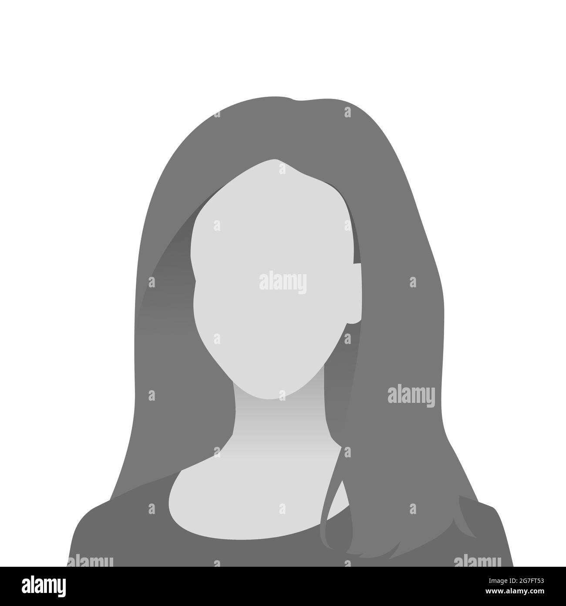

Java || Python || C programming || Full Stack Developer || Coding Enthusiast
An enthusiastic B.Tech student with a passion for technology and a strong skill set in software development and problem-solving. With a keen eye for innovation and a collaborative mindset, eager to make meaningful contributions to the technology.
Skills
- JAJA | C | PYTHON
- HTML
- CSS
- Javascript
- DJango
Projects
1- HEALTHCARE PORTAL
An end-to-end healthcare portal for patient registration, organizing information and fixing appointments – Django, HTML, CSS, MongoDB, Bootstrap.
2- BANKING SYSTEM
The Python Banking System is a simple application that allows users to manage their bank accounts. It provides basic banking operations such as deposit, withdrawal, balance inquiry, and account creation.
3- HANGMAN GAME
The Hangman Game project is a classic word-guessing game where the player tries to guess a hidden word by suggesting letters within a certain number of attempts. The game provides an interactive and enjoyable way to improve vocabulary and guessing skills. The Python Hangman Game project implements a text-based version of the game with features such as word selection, guessing, and score tracking.
4- OPEN-SOURCE
Participated and contributed in various Open-Source organisations which participated in GSOC 2024.
5- WEB GAMES
Made small creative web games which can be played with ease using Python.
1234567890
Email: qwerty@example.com
LinkedIn